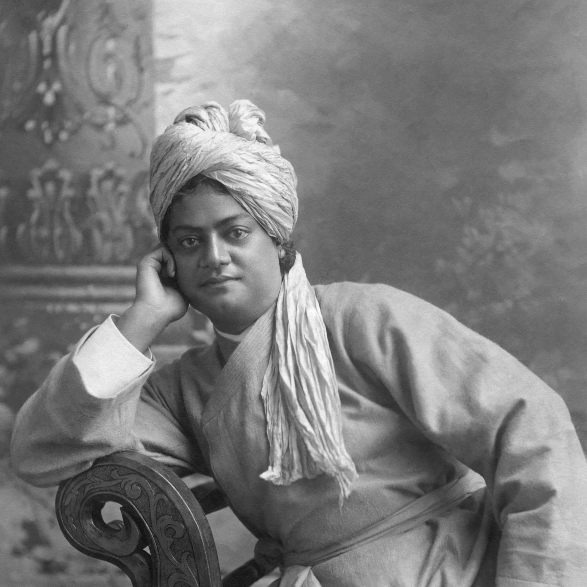

Vivekananda, original name Narendranath Datta, Datta also spelled Dutt, (born January 12,
1863, Calcutta [now Kolkata]—died July 4, 1902, near Calcutta), Hindu spiritual leader and
reformer in India who attempted to combine Indian spirituality with Western material
progress, maintaining that the two supplemented and complemented one another. His Absolute
was a person’s own higher self; to labour for the benefit of humanity was the noblest
endeavour.